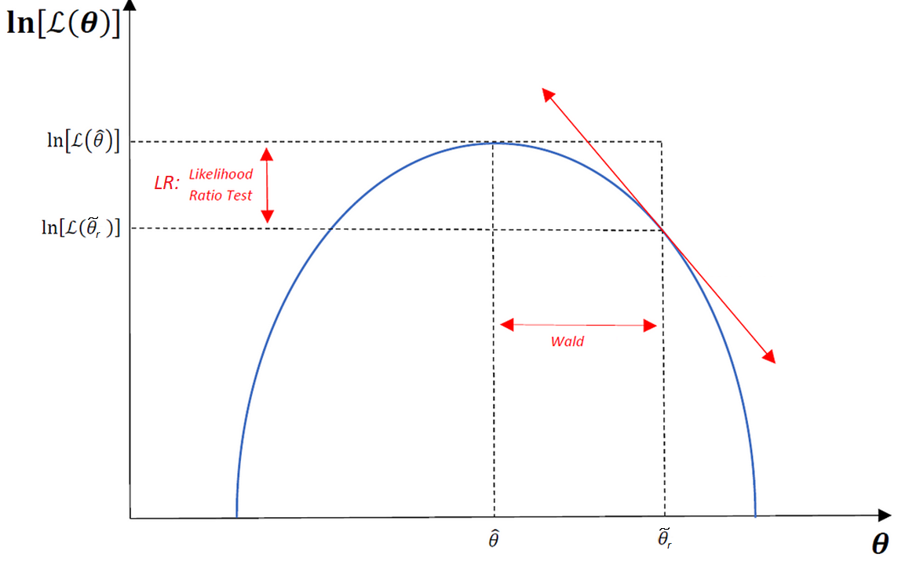

7 Teoría MLE
7.1 Diapositivas
A continuación se incluyen las diapositivas. En la parte inferior incluí enlaces para descarga.
Notas: (i) puede tomar unos segundos en aparecer el material; (ii) para avanzar hacer click sobre la diapositiva y luego usar las flechas del teclado.
7.2 The Estimator
Maximum Likelihood Estimator (MLE): Given a dataset \(\{w_i\}_{i=1}^n\), we seek the parameter vector \(\boldsymbol{\theta}\) that maximizes the probability of having observed that particular dataset. That is, the \(\boldsymbol{\theta}\) that makes the observed outcome most plausible.
The specification of the estimator involves:
- A (random) sample: \(\{w_i\}_{i=1}^n\)
- A probability density function (pdf) \(f(w_1,\ldots,w_n;\boldsymbol{\theta})=f(\boldsymbol{w};\boldsymbol{\theta})\)
The model is correctly specified when the true parameter vector \(\theta_0\) is used: \(f(w_1,\ldots,w_n;\theta_0)\).
The joint probability function — called the likelihood function — is
\[\mathcal{L}_n(\theta)=f(w;\theta)\]
Given the data, this is a function of the parameters. To facilitate numerical optimization (the joint pdf of \(n\) independent observations can be highly nonlinear), we apply the monotone log transformation and work with the log-likelihood:
\[\ell_n(\boldsymbol{\theta})=\ln(\mathcal{L}_n(\boldsymbol{\theta}))\]
The MLE estimator is therefore
\[\hat{\boldsymbol{\theta}}_{\text{MLE}}=\operatorname*{arg\,max}_{\boldsymbol{\theta}}\,\ln f(\boldsymbol{w};\boldsymbol{\theta})\]
The score function (first-order conditions / gradient of the log-likelihood) is
\[S(\boldsymbol{\theta})=\frac{\partial \ln\mathcal{L}_n(\boldsymbol{\theta})}{\partial \boldsymbol{\theta}}\]
7.3 Standard Errors (Asymptotic Distribution)
The Fisher Information Matrix is defined as the inner product of the score:
\[I(\boldsymbol{\theta})=\mathbb{E}\left\{S(\boldsymbol{\theta})\,S(\boldsymbol{\theta})'\right\}\]
Large values of \(I\) indicate that small changes in \(\theta\) produce large changes in the log-likelihood — there is a lot of information about \(\theta\).
The Information Matrix Equality states:
\[\mathbb{E}_f\left\{S(\boldsymbol{\theta})\,S(\boldsymbol{\theta})'|_{\boldsymbol{\theta}_0}\right\}=-\mathbb{E}_f\left\{\boldsymbol{H}|_{\boldsymbol{\theta}_0}\right\}\]
where \(\boldsymbol{H}\) is the Hessian of all second-order partial derivatives,
\[\boldsymbol{H}=\frac{\partial^2\mathcal{L}_n(\boldsymbol{\theta})}{\partial \boldsymbol{\theta} \partial \boldsymbol{\theta}'}\]
Under regularity conditions, two variance estimators are:
\[\operatorname{Var}_H(\hat{\boldsymbol{\theta}})=-\boldsymbol{H}(\hat{\boldsymbol{\theta}})^{-1} \qquad \text{(Hessian-based)}\]
\[\operatorname{Var}(\hat{\boldsymbol{\theta}})=I(\hat{\boldsymbol{\theta}})^{-1} \qquad \text{(Information-based)}\]
Asymptotic distribution. Under the following (regularity) conditions:
- The data-generating process is \(f(\cdot)\) as specified in the likelihood.
- Identification: \(f(w_i,\boldsymbol{\theta}^{(1)})=f(w_i,\boldsymbol{\theta}^{(2)})\) iff \(\boldsymbol{\theta}^{(1)}=\boldsymbol{\theta}^{(2)}\).
- \(\operatorname{plim}\,n^{-1}H(\boldsymbol{\theta})\) exists and is nonsingular.
- Differentiation and integration of the (log-)likelihood are interchangeable.
we have:
- \(\hat{\boldsymbol{\theta}}\) is a consistent estimator of \(\boldsymbol{\theta}\).
- It converges at rate \(\sqrt{n}\) to a normal distribution:
\[\hat{\boldsymbol{\theta}}\sim\mathcal{N}\!\left(\boldsymbol{\theta},\,-\boldsymbol{H}(\boldsymbol{\theta})^{-1}\right)\]
Two key properties of MLE follow:
- Efficiency. \(\hat{\boldsymbol{\theta}}_{\text{MLE}}\) achieves the Cramér–Rao lower bound: \(\operatorname{Var}(\hat{\boldsymbol{\theta}}_{\text{MLE}})\geq [I(\boldsymbol{\theta}_0)]^{-1}\)
- Invariance. If \(\gamma=g(\boldsymbol{\theta})\), then \(\hat{\gamma}=g(\hat{\boldsymbol{\theta}})\) for any continuous, differentiable \(g(\cdot)\).
7.4 Inference
We focus on the Likelihood Ratio (LR) test. Let \(\hat{\theta}_u\) be the unconstrained MLE and \(\tilde{\theta}_r\) the constrained MLE (imposing \(H_0\)). The LR statistic is:
\[LR = -2\left[\ell(\tilde{\theta}_r) - \ell(\hat{\theta}_u)\right] \sim \chi^2_q\]
If \(H_0\) is true, \(\ell(\tilde{\theta}_r)\) and \(\ell(\hat{\theta}_u)\) should be close.

7.5 Examples
Example 1. Let \(z_i \sim i.i.d.\,\mathcal{N}(\mu,1)\) for \(i=1,\ldots,n\). The log-likelihood is
\[\hat{\mu}_{\text{MLE}} = \operatorname*{arg\,max}_{\mu}\left(-\frac{n\ln(2\pi)}{2}-\sum_{i=1}^n\frac{(z_i-\mu)^2}{2}\right)\]
Solving the FOC yields \(\hat{\mu}_{\text{MLE}}=\bar{z}\).
Example 2. Normal Linear Regression Model (NLRM). Consider \(Y=X\beta+u\) with \(u\sim\mathcal{N}(0,\sigma^2 I_n)\) and parameters \(\boldsymbol{\theta}=(\boldsymbol{\beta},\sigma^2)\). The log-likelihood is
\[\ell(\boldsymbol{\theta})=-\frac{n\ln(2\pi\sigma^2)}{2}-\frac{(\boldsymbol{y}-\boldsymbol{X}\boldsymbol{\beta})'(\boldsymbol{y}-\boldsymbol{X}\boldsymbol{\beta})}{2\sigma^2}\]
The FOC yield:
\[\hat{\boldsymbol{\beta}}_{\text{MLE}}=(X'X)^{-1}(X'Y) \qquad;\qquad \hat{\sigma}^2_{\text{MLE}}=\frac{(Y-X\hat{\boldsymbol{\beta}})'(Y-X\hat{\boldsymbol{\beta}})}{n}\]
Note that \(\hat{\boldsymbol{\beta}}_{\text{MLE}}\) coincides with the OLS estimator. The Fisher information matrix is
\[I(\boldsymbol{\beta}_0)= \begin{pmatrix} \frac{1}{\sigma_0^2}(X'X) & 0\\ 0 & \frac{n}{2\sigma_0^4} \end{pmatrix}\]
7.6 Slides
Click on the slide and use the keyboard arrows to navigate.